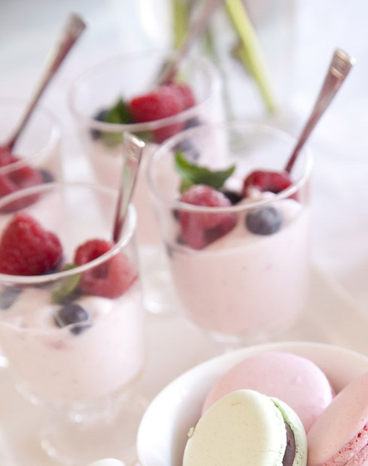

Waarom hebben wij gekozen voor Biologische frambozen yoghurt
Yoghurt is zuur en daardoor lang houdbaar. In een kom yoghurt zitten minimaal anderhalf miljard levende bacteriën, Voor de meeste bacteriën in de yoghurt is de maag te zuur, Behalve voor de probiotica Die overleven de zure omgeving van onze maag en komen levend in onze darm terecht. Probiotica zijn van nature ook aanwezig in de darmen en belangrijk voor een goede darmgezondheid. na een portie yoghurt zal je zeker geen honger meer hebben omdat het goed vult.
Waarom is Yoghurt gezond?
In de meeste landen is zuivel en dus ook yoghurt een belangrijk onderdeel van het voedingspatroon. In Nederland raadt het Voedingscentrum aan om dagelijks 250 tot 500 ml melk en melkproducten zoals yoghurt te consumeren. Maar hoe gezond is yoghurt eigenlijk en is de ene soort gezonder dan de andere? Is yoghurt gezond? Wat yoghurt gezond maakt, is het gebruik van melkzuurbacteriën waardoor de melksuiker fermenteert. Dat betekent dat de melksuiker (lactose) omgezet wordt in melkzuur. Zowel de bacteriën zelf als de melkzuur zijn enorm gezond voor onze darmflora. Een gezonde darmflora is de bakermat van jouw gezondheid. Het is niet alleen beter voor je spijsvertering, het versterkt ook je immuunsysteem en verlaagt het risico op veel aandoeningen waaronder zelfs diabetes. Net als alle andere zuivel bevat yoghurt ook veel bruikbare eiwitten, calcium, fosfor, kalium, magnesium, vitamine B2, vitamine B12, vitamine D en vitamine K. De lactose die van nature in melk zit, wordt in yoghurt grotendeels gefermenteerd. Hierdoor kan het dus zijn dat mensen met een lactose-intolerantie geen melk kunnen verdragen, maar wel yoghurt.
Hoe word de Biologische frambozen yoghurt gemaakt?
deze yoghurt is eigenlijk biologische melk. Er wordt zuivere melkzuurbacteriën toegevoegd aan de melk. Met een smaakje framboos en kleurstof erin. En dan nog roeren en af laten koelen. de yoghurt zal ook koud bewaard moeten worden om het zo lang mogelijk eetbaar te houden.
Ingrediënten
Volle Yoghurt met levende fermenten, rietsuiker, frambozen 6,3%, frambozensap 1,8%, citroensapconcentraat, verdikkingsmiddelen: pectine, johannesbroodpitmeel, rode bietensapconcentraat, natuurlijk frambozenaroma, zuurteregelaar: calciumcitraat, afkomstig van biologische landbouw
Prijs: Biologische yoghurt framboos verkopen we in een bakje met 150 ml voor €2,00.